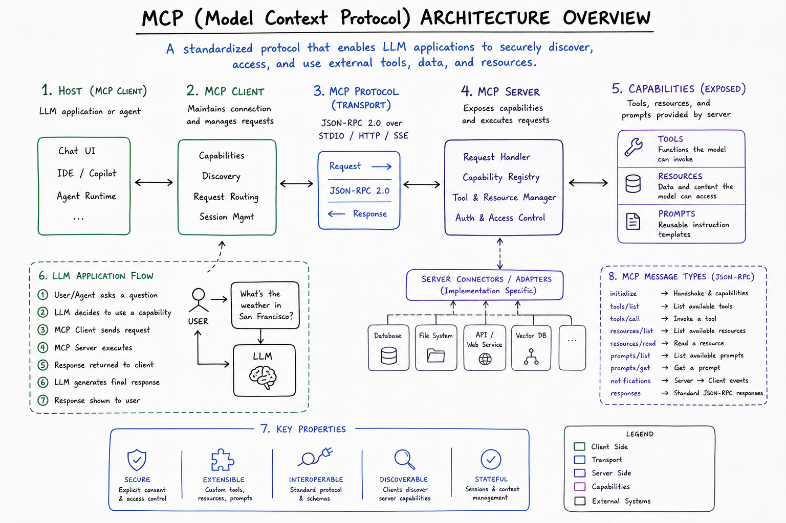
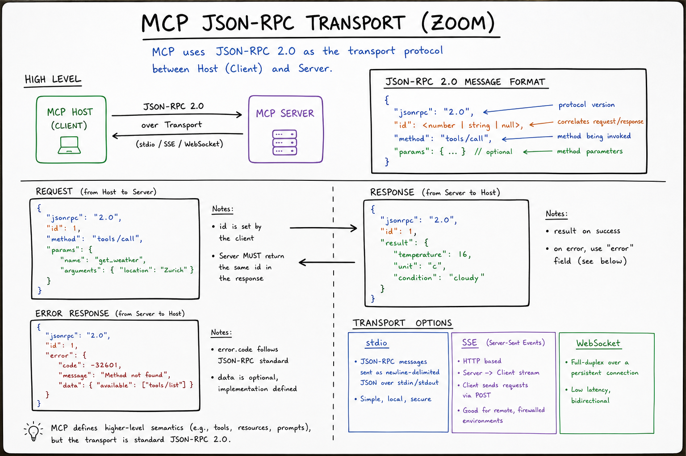
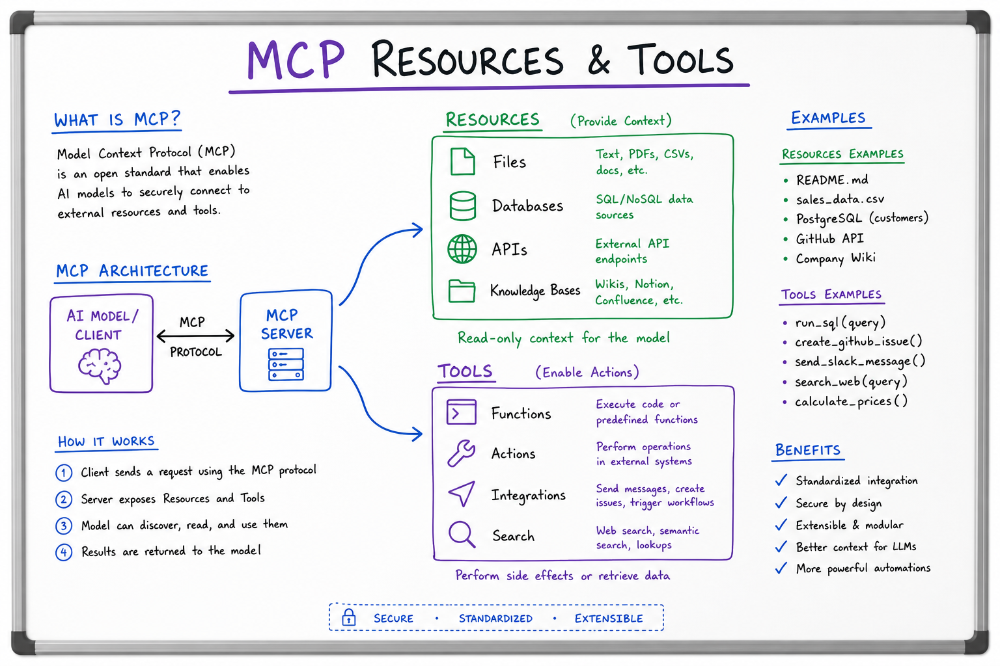

MCP Protocol // Stretch
Anthropic’s Model Context Protocol: a JSON-RPC standard for connecting LLM hosts (Claude Desktop, Cursor, custom agents) to external data and tools via pluggable MCP servers — resources, tool schemas, and prompts with stdio or SSE transport.

MCP topology: Host (IDE or agent runtime) embeds an MCP Client that speaks JSON-RPC to one or more MCP Servers (filesystem, Postgres, GitHub). Servers expose resources/, tools/, and optional prompts/. The LLM never talks to servers directly — the host mediates capability discovery and tool execution.
01 — What & Why
Problem: Every AI product reinvented tool integration: bespoke plugins, ad-hoc REST wrappers, N different auth flows. MCP standardizes how an LLM application discovers and invokes external capabilities.
Functional
- List and read resources (files, DB rows, API snapshots) as context
- Discover and call tools with JSON Schema arguments
- Optionally fetch reusable prompt templates
- Handshake: protocol version, server capabilities, client permissions
Non-Functional
- Isolation: servers run as separate processes; crash doesn’t take down host
- Composability: connect multiple servers (Git + Slack + internal wiki)
- Security: host controls which tools the model may invoke
- Latency: tool round-trip adds 50–500ms per call; batch reads where possible
Interview anchor: MCP is not a replacement for OpenAI function calling — it is the wire protocol between your app and tool providers. The LLM still emits tool calls; the host routes them through MCP.
01a — Core Concepts
| Term | Definition | Gotcha |
|---|---|---|
| Host | Application embedding the LLM (Cursor, Claude Desktop, your agent) | Host owns UX, auth, and which MCP servers are enabled |
| MCP Client | Library inside host that maintains server connections | One client instance typically manages many servers |
| MCP Server | Process exposing resources/tools over MCP | Servers are untrusted; validate all inputs/outputs |
| Resource | Addressable content via URI (e.g. file:///docs/policy.md) | Read-only context; not executable |
| Tool | Named function with JSON Schema input; returns structured result | Side effects (write DB) need explicit user approval in host |
| Prompt | Pre-built template with arguments for common tasks | Less common than tools; useful for repeatable workflows |
| stdio transport | JSON-RPC lines on stdin/stdout | Default for local servers; simple but single-client |
| SSE transport | HTTP + Server-Sent Events for remote servers | Needs auth, TLS, and connection lifecycle handling |
| initialize | First RPC: exchange protocol version + capabilities | Mismatch → refuse connection; don’t silently degrade |
| Capability negotiation | Server declares tools, resources, prompts support flags | Client must not call unsupported methods |
01b — API / Interface Surface
MCP uses JSON-RPC 2.0 over stdio or HTTP/SSE. Methods are namespaced: tools/list, tools/call, resources/list, resources/read.
# Client → Server (stdio, one JSON object per line)
{"jsonrpc":"2.0","id":1,"method":"initialize","params":{
"protocolVersion":"2024-11-05",
"capabilities":{},
"clientInfo":{"name":"my-agent","version":"1.0.0"}
}}
# Server → Client
{"jsonrpc":"2.0","id":1,"result":{
"protocolVersion":"2024-11-05",
"capabilities":{"tools":{},"resources":{}},
"serverInfo":{"name":"postgres-mcp","version":"0.2.0"}
}}
# List tools, then call
{"jsonrpc":"2.0","id":2,"method":"tools/list","params":{}}
{"jsonrpc":"2.0","id":3,"method":"tools/call","params":{
"name":"run_readonly_query",
"arguments":{"sql":"SELECT count(*) FROM orders WHERE status='open'"}}
}
Python MCP server skeleton (mcp SDK)
from mcp.server import Server
from mcp.server.stdio import stdio_server
import mcp.types as types
server = Server("demo-tools")
@server.list_tools()
async def list_tools() -> list[types.Tool]:
return [types.Tool(
name="echo",
description="Echo input back",
inputSchema={"type":"object","properties":{"text":{"type":"string"}},"required":["text"]},
)]
@server.call_tool()
async def call_tool(name: str, arguments: dict) -> list[types.TextContent]:
if name == "echo":
return [types.TextContent(type="text", text=arguments["text"])]
raise ValueError(f"Unknown tool: {name}")
async def main():
async with stdio_server() as (read, write):
await server.run(read, write, server.create_initialization_options())
if __name__ == "__main__":
import asyncio; asyncio.run(main())
Compare with raw OpenAI tools in LLM Fundamentals and agent orchestration in LangGraph.
02 — When to Use / When NOT
| Scenario | Use MCP? | Alternative |
|---|---|---|
| IDE needs GitHub + filesystem + DB for coding agent | Yes | Reuse community MCP servers; stdio for local |
| Single REST API, one tool, your own backend | Maybe overkill | Direct OpenAI function + your HTTP handler |
| Share tools across Claude Desktop, Cursor, custom app | Yes | One MCP server, many hosts |
| Sub-10ms in-process function | No | Native Python function in agent graph |
| Untrusted third-party plugins at scale | Careful | Sandbox + capability ACLs; see security section |
| Mobile client calling cloud tools | SSE + auth | Your API gateway, not raw stdio |
Rule of thumb: MCP when you want portable, discoverable tool servers. Skip when a single in-process handler is enough.
03 — Architecture
┌────────────── HOST (Cursor / Claude Desktop / Agent) ──────────────┐
│ LLM ◄──► Tool Router ◄──► MCP Client(s) │
│ │ │ │
│ User approval stdio / SSE │
└──────────────┼────────────────────┼─────────────────────────────────┘
│ │
┌───────────┴───────┐ ┌────────┴────────┐ ┌─────────────────┐
│ filesystem-server │ │ github-server │ │ postgres-server │
│ resources + tools │ │ PR tools │ │ read-only SQL │
└───────────────────┘ └─────────────────┘ └─────────────────┘
initializetools/list, resources/list → inject schemas into LLM contexttools/call → result as TextContent/ImageContent back to model04 — Deep Dive: Transport Layer
| Transport | Pros | Cons |
|---|---|---|
| stdio | Zero network config; perfect for local dev; Cursor default | One client per process; no remote scaling |
| SSE (HTTP) | Remote servers; load-balanced; browser-friendly | Auth, reconnect, backpressure complexity |
Every message is a single JSON-RPC object. Notifications (no id) push server-initiated events like notifications/resources/updated.

Transport zoom: initialize → capability exchange → steady-state tools/call loop. stdio = newline-delimited JSON; SSE = POST for client messages, event stream for server pushes. Sticky note: typical tool latency 80–300ms local, 200–800ms remote.
05 — Deep Dive: Resources vs Tools
| Primitive | Purpose | Example |
|---|---|---|
| Resource | Pull context into prompt (read-only) | resources/read on wiki://runbook/deploy |
| Tool | Execute action with side effects | create_jira_ticket, run_sql |
| Prompt | Parameterized template | code_review with {diff} slot |
Resources reduce token waste: host can prefetch relevant URIs before the LLM turn instead of the model “guessing” tool calls to read files.

Resources/tools zoom: host subscribes to resources/list, user @-mentions a resource URI, host prefetches content into context window. Tools require explicit schema match + optional approval gate before tools/call.
06 — Deep Dive: Building MCP Servers
- Scope narrowly: one domain per server (GitHub, not “everything”)
- Schema-first tools: strict JSON Schema; reject unknown fields
- Idempotent reads: resources should be cacheable with ETags where possible
- Structured errors: return MCP error codes; don’t leak stack traces to model
- Rate limit internally: protect upstream APIs (GitHub 5000 req/hr)
# Claude Desktop config (~/.config/claude/claude_desktop_config.json)
{
"mcpServers": {
"filesystem": {
"command": "npx",
"args": ["-y", "@modelcontextprotocol/server-filesystem", "/Users/me/projects"]
}
}
}
07 — Deep Dive: Security Model
- Trust boundary: MCP server runs with OS permissions of its process — use least privilege
- Host mediation: never let model invoke tools without host policy (allowlist, HITL)
- Prompt injection via resources: malicious file content → sanitize; see Prompt Engineering
- Remote SSE: OAuth2/mTLS; rotate tokens; audit log every
tools/call - Argument validation: SQL tools must use read-only roles + query allowlists
08 — Deep Dive: Ecosystem & Hosts
| Host | MCP Role |
|---|---|
| Claude Desktop | First-party reference host; stdio servers in config |
| Cursor | IDE agent with MCP for codebase + external tools |
| Custom agents | LangGraph node wraps MCP client; see LangGraph |
Community servers: filesystem, GitHub, Postgres, Slack, Puppeteer browser. Pattern mirrors plugin marketplaces but with a single protocol.
09 — Production & Ops
Observability
- Log every
tools/call: server, tool name, latency, success/fail (not full PII args) - Metrics: calls/min per server, p99 latency, error rate by tool
- Trace correlation: link MCP span to LLM trace (LangSmith, OpenTelemetry)
Failure modes
- Server crash: host reconnects; degrade gracefully (disable tools, notify user)
- Schema drift: server upgrade changes tool shape → version pin + contract tests
- Thundering herd: agent loops 20 tool calls → circuit breaker + max iterations
Cost
- Each tool result adds tokens to context — truncate/summarize large responses
- Prefer resource prefetch over repeated
tools/callreads
10 — Where It Shows Up
- LangGraph — MCP client as a tool node in agent graphs
- Agent Architectures — ReAct loop with standardized tool backends
- LLM Fundamentals — function calling primitives underneath
- Prompt Engineering — injection risks from tool/resource content
- Distributed Message Queue HLD — async tool fan-out at scale (Kafka workers vs sync MCP)
- Notification System HLD — push tool results to users asynchronously
11 — Common Pitfalls
- God-server anti-pattern: one MCP server with 50 tools → split by domain
- Skipping initialize: capability mismatch causes cryptic runtime errors
- Trusting tool output: treat as untrusted user input; re-validate before side effects
- Huge resource payloads: blows context window — paginate or summarize
- No HITL on writes: agent deletes prod data — require confirmation for mutating tools
- Confusing MCP with RAG: resources ≠ vector search; pair with RAG when semantic retrieval needed
12 — Interview Q&A
What problem does MCP solve that OpenAI function calling doesn’t?
Explain the Host / Client / Server roles in MCP.
stdio vs SSE — when would you pick each?
What is the initialize handshake and why does it matter?
protocolVersion, capabilities (tools/resources/prompts supported), and client/server info. Prevents calling unsupported methods and enables forward-compatible evolution. Fail closed on version mismatch.Resources vs tools — how do you decide?
read_file tool to reduce call overhead.How would you secure an MCP server with database access?
How does MCP fit into a LangGraph agent?
tools/list cached; agent node binds schemas to LLM; tool node calls tools/call via MCP instead of inline Python. Checkpointing stores conversation; MCP handles external I/O. See LangGraph for HITL interrupts before mutating tools.What latency should you budget per MCP tool call?
tools/list, summarize large responses before re-prompting.